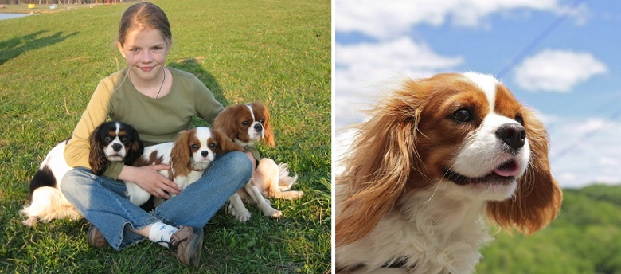

Эти 2 породы собак занимают почетное первое место среди собак-компаньонов и нянек для детей. Это идеальный друг, готовый следовать за вами хоть на край света. Терпеливый, послушный, ласковый и безмерно преданный.
Пудель
Необычайно жизнерадостный и веселый пес . По обучаемости командам и разным трюкам этой породе просто нет равных! Не зря пудель еще считается цирковой собакой. Такой четвероногий друг с удовольствием составит компанию вашему ребенку и всегда будет - за
любое безобразие ;) Кроме всего прочего, у этой породы есть еще одно преимущество - они практически не линяют, а ребенок сможет попрактиковаться в парикмахерском искусстве.
Вельш-корги
Собаки этой породы не только активны, веселы и дружелюбны, но еще и признанные интеллектуалы. Они очень бережно и нежно будут обращаться с маленьким ребенком, и вы не будете бояться оставлять их наедине.
Ньюфаундленд
Если вы счастливый обладатель загородного дома, то вам стоит задуматься о том, чтобы завести здоровяка Ньюфаундленда . Это пес с «большим сердцем», его любовь ко всем членам семьи просто безгранична. Они спокойные , доброжелательные и очень исполнительные
друзья. Ваш ребенок всегда будет под чутким присмотром «большого няня». А еще, представители этой породы – прекрасные пловцы и спасатели на воде.
Кавалер Кинг Чарльз спаниель
Прекрасный выбор, как для детей, так и для пожилых людей. Этот милейший пес прекрасно приспосабливается к темпераменту и распорядку дня своих хозяев. С ребенком он будет играть и бегать столько, на сколько у вашего ребенка хватит запала, а вот с вашими
бабушками и дедушками он будет с удовольствием смотреть сериалы. Прекрасно обучаемая порода, невероятно преданная и жизнерадостная.

Все породы, описанные выше, совершенно не агрессивны и бесконечно преданны своим хозяевам. А самое главное – эти собаки обладают железными нервами и терпением, так что любые действия со стороны ребенка, такие как потягать своего друга за хвост
или поиграть с ним в доктора, будут встречены жестом безграничной любви. Задумайтесь, может все таки стоит прислушаться к просьбам своего ребенка и стать тем самым Сантой, который подарит друга.